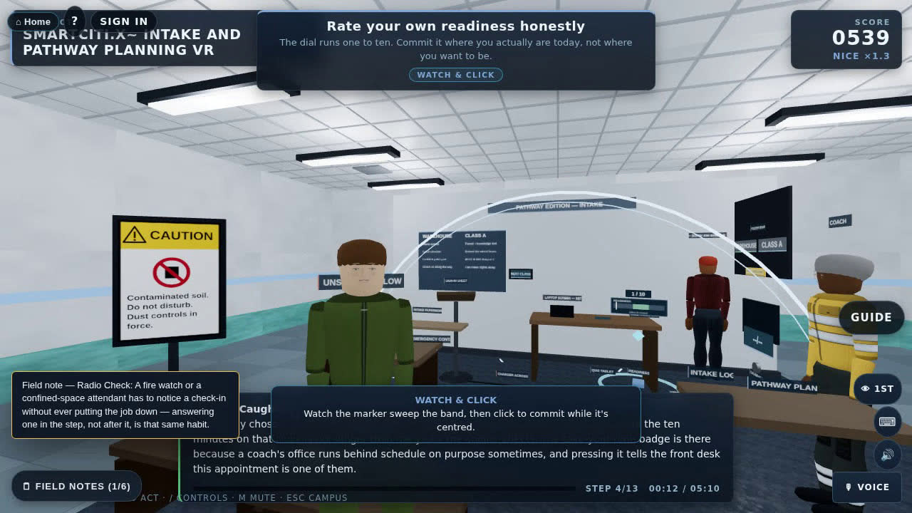
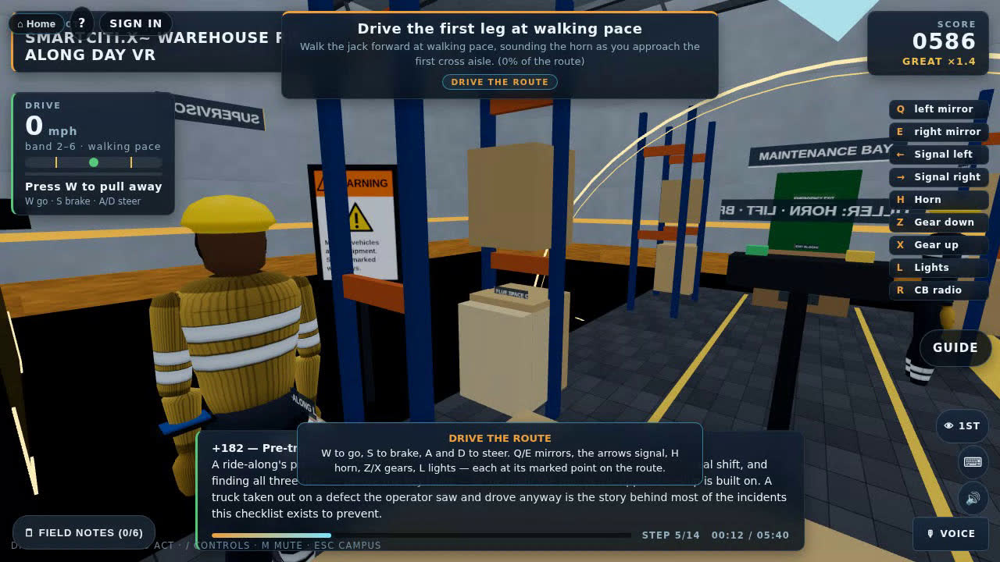
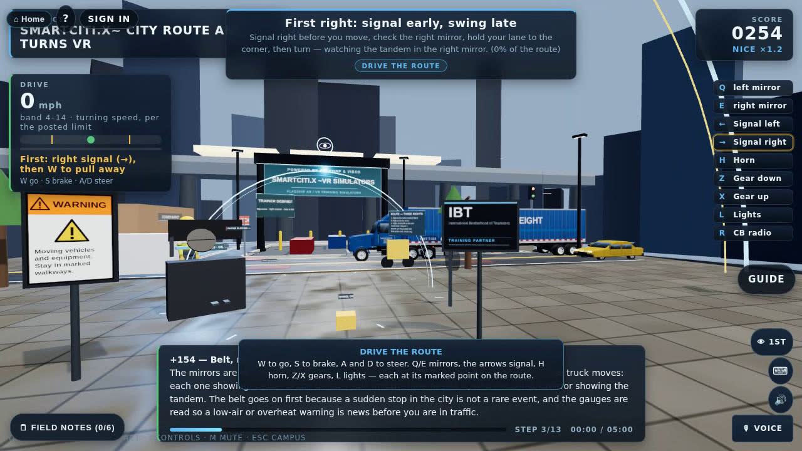
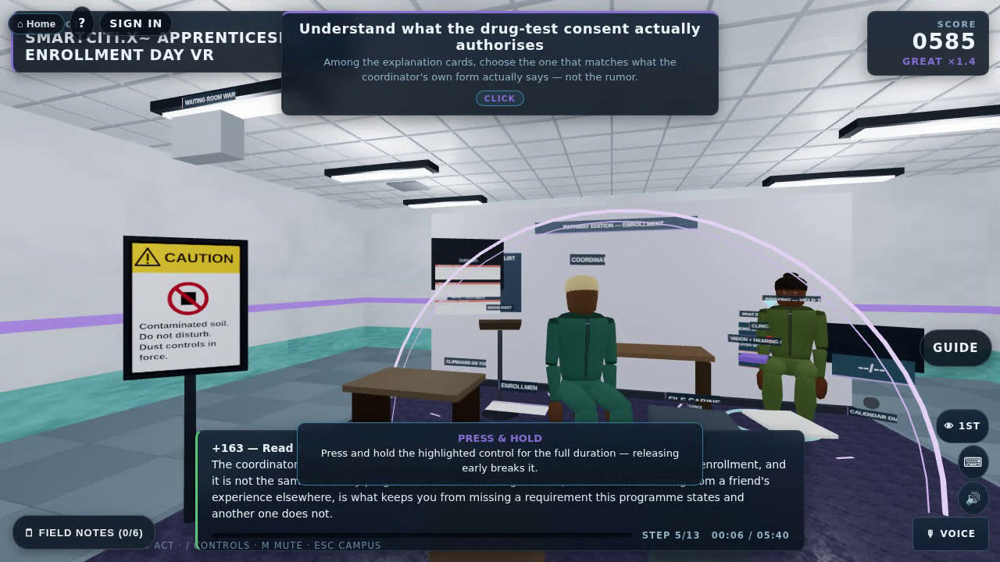
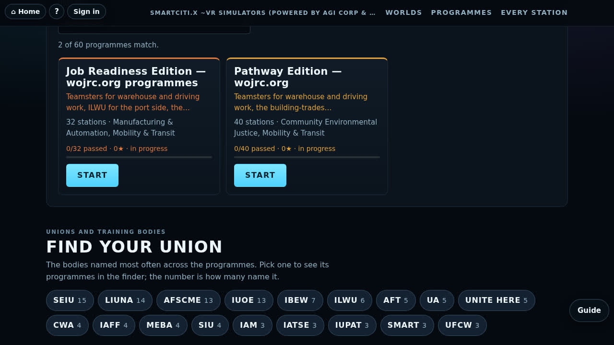
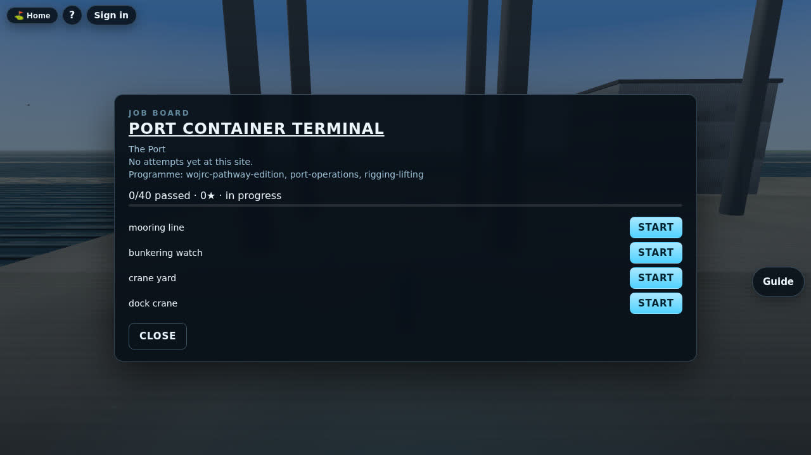

A participant’s route from intake to an alumni mentor, practised as graded procedures in a phone browser, on a laptop or in a headset.
Prepared for Joyce Guy and the teamnamed by the sponsor of this edition
wojrc-pathway-edition · job-readiness-edition
The home page, the Pathway track, five milestone stations and two trade stations recorded from real runs, then the Bay World job board where the edition is anchored. Narrated by a synthetic voice.
The only facts this page states about the organisation are the words it publishes about itself. Each highlighted phrase is mapped below to the stations that practise it.
Everyone who is willing to work hard deserves an opportunity to succeed. For the past 14 years, we have been helping low-income Bay Area residents' gain the skills and confidence they need to get and keep jobs, and build financial security that support themselves and their families.
How We Help: We offer training for warehouse and Commercial A truck driver positions. We prepare you and help you navigate and enroll in union construction trades apprenticeship programs. We offer financial coaching to help build your credit score, reduce debt, and build savings.
Page titles:“TDL Pre-Apprenticeship Training”“Wellness Resource Center”
gain the skills and confidence they need to get and keep jobs4 stations
Mapped from the catalog: the milestone stations for intake, interview, job fair and graduation.
training for warehouse7 stations
Mapped from the catalog: why line opens “Warehouse:”, plus the ride-along milestone.
Commercial A truck driver positions12 stations
Mapped from the catalog: why line opens “Class A:”, plus the permit-study milestone.
navigate and enroll in union construction trades apprenticeship programs8 stations
Mapped from the catalog: why line opens “Apprenticeship:”, plus the interview and enrolment milestones.
financial coaching to help build your credit score, reduce debt, and build savings6 stations
Mapped from the catalog: why line opens “Financial coaching:”, plus the first-paycheck milestone.
TDL Pre-Apprenticeship Training10 stations
Mapped from the catalog: catalog trade field names the TDL pre-apprenticeship.
Wellness Resource Center5 stations
Mapped from the catalog: why line opens “Wellness:”, plus the first-paycheck milestone set at the wellness resource centre.
A station can practise more than one line; milestone stations are shaded and carry their number. No endorsement, partnership or review by wojrc.org is claimed. The organisation’s staff are invited to review every station before any learner sees it.
The Pathway Edition opens with 8 milestone stations, in the order a participant meets them. Each is a full station: 12 to 14 steps, several kinds of interaction, hazards to catch and interruptions that change the scene. After them come the 32 Job Readiness stations, grouped by service.
The pathway's first appointment: a coach helps an applicant choose warehouse or Commercial Class A from an honest self-assessment rather than a coin flip.
Before any application goes in, a resume is built section by section and a mock interview is sat until the posture, the eye contact and the hardest question all hold steady.
The job fair floor where the resume and the rehearsed pitch meet an actual employer table and the apprenticeship coordinator in person.
The warehouse track's first live day: a supervisor beside you on a real pallet-jack route, walking pace and the horn at every cross aisle.
The Class A track's first milestone: the manual studied honestly and the knowledge test sat without rushing, permit in hand at the end of it.
The paperwork day that turns an offer into an enrolment: documents, the drug-test consent actually understood before it is signed, a physical, and the coordinator's own checklist — every requirement stated only as the programme's own.
The wellness resource centre's financial coaching desk the week the first check actually arrives: direct deposit, a budget for the real number, and a benefits election made before the window closes.
The pathway's last station: a certificate earned in front of the cohort, and an alumni mentor matched with real 30, 60 and 90-day check-ins booked before anyone leaves the hall.
Each station is a procedure worked one step at a time, using 9 kinds of interaction: select, find, hold, gauge, track, drag, sequence, turn, drive. Hazards in the scene must be caught, and interruptions arrive mid-run and must be answered with the right control. Across the edition that is 504 steps, 160 hazards and 76 interruptions.
1592 lessons and 126 tasks; all 20 levels meet the 75-lesson bar. A lesson is one station step under one condition (weather, hour, interruption).
| Pathway Edition | Job Readiness Edition | |
|---|---|---|
| Catalog id | wojrc-pathway-edition | job-readiness-edition |
| Stations | 40 (8 milestones + 32 shared) | 32 |
| Ladder | 20 levels, 1592 lessons, 126 tasks | 20 levels, 1593 lessons, 127 tasks |
| Eval, mean / min | 95.7 / 84 | 95.7 / 84 |
| Bay World anchor | Port Container Terminal (port) | West Oakland Truck Yard (west-oakland) and Emery Distribution Center (emery-crossing) |
| Unions named | Teamsters for warehouse and driving work, the building-trades apprenticeship programmes the pathway prepares people for, and SEIU/AFSCME for the public-benefit and wellness staff a participant meets along the way | Teamsters for warehouse and driving work, ILWU for the port side, the building-trades apprenticeship programmes the edition prepares people for, and SEIU/AFSCME for the public-benefit and wellness staff |
In catalog order. “What it trains” is the programme’s own why line (the station tagline where the programme gives none). Eval is the content-eval score from docs/investor/stations.csv.
| # | Station | What it trains | Practises | Steps | Interaction kinds | Hazards | Interruptions | Eval |
|---|---|---|---|---|---|---|---|---|
| 1 | Intake and Pathway Planningwp-intake-and-pathway-planning |
The pathway's first appointment: a coach helps an applicant choose warehouse or Commercial Class A from an honest self-assessment rather than a coin flip. | Get and keep jobs | 13 | 8 select, find, hold, gauge, track, drag, sequence, turn | 4 | 2 Pressure to skip the comparison; Another applicant leans in to copy | 96 |
| 2 | Mock Interview and Resumewp-mock-interview-and-resume |
Before any application goes in, a resume is built section by section and a mock interview is sat until the posture, the eye contact and the hardest question all hold steady. | ApprenticeshipGet and keep jobs | 13 | 8 select, hold, find, sequence, gauge, track, turn, drag | 4 | 2 Phone buzzing mid-answer; Fire alarm test in the building | 95 |
| 3 | Employer Meet-and-Greetwp-employer-meet-and-greet |
The job fair floor where the resume and the rehearsed pitch meet an actual employer table and the apprenticeship coordinator in person. | Get and keep jobs | 12 | 8 select, hold, find, sequence, gauge, track, drag, turn | 4 | 2 Sparking power strip behind the table; Another job seeker cuts into the conversation | 96 |
| 4 | Warehouse Ride-Along Daywp-warehouse-ride-along |
The warehouse track's first live day: a supervisor beside you on a real pallet-jack route, walking pace and the horn at every cross aisle. | Warehouse | 14 | 8 select, sequence, hold, find, drive, gauge, turn, drag | 4 | 2 Forklift crossing the aisle; Pedestrian walks up to the raised load | 95 |
| 5 | Permit Study and Knowledge-Test Daywp-permit-study-and-knowledge-test |
The Class A track's first milestone: the manual studied honestly and the knowledge test sat without rushing, permit in hand at the end of it. | Commercial A | 13 | 8 select, hold, sequence, track, find, gauge, turn, drag | 4 | 2 A folded cheat sheet slides under the table; Testing system reboot warning | 96 |
| 6 | Apprenticeship Enrollment Daywp-apprenticeship-enrollment-day |
The paperwork day that turns an offer into an enrolment: documents, the drug-test consent actually understood before it is signed, a physical, and the coordinator's own checklist — every requirement stated only as the programme's own. | Apprenticeship | 13 | 8 select, find, sequence, hold, gauge, track, turn, drag | 4 | 2 Coordinator hands you the wrong form; The applicant ahead faints at the blood draw | 96 |
| 7 | First-Paycheck Coachingwp-first-paycheck-coaching |
The wellness resource centre's financial coaching desk the week the first check actually arrives: direct deposit, a budget for the real number, and a benefits election made before the window closes. | Financial coachingWellness page | 13 | 8 select, hold, find, sequence, gauge, track, drag, turn | 4 | 2 Caller posing as payroll; Coworker asks to borrow against your check | 94 |
| 8 | Graduation and Alumni-Mentor Daywp-graduation-and-alumni-mentors |
The pathway's last station: a certificate earned in front of the cohort, and an alumni mentor matched with real 30, 60 and 90-day check-ins booked before anyone leaves the hall. | Get and keep jobs | 13 | 8 select, sequence, hold, find, gauge, track, drag, turn | 4 | 2 Microphone feedback squeals through the hall; A photographer interrupts the mentor conversation | 96 |
| 9 | Forklift Dockforklift-dock |
Warehouse: the shared opener, where the forklift and the dock are where the training wojrc.org describes actually starts. | Warehouse | 12 | 6 select, sequence, drag, gauge, track, find | 4 | 2 Trailer moving; Pedestrian in path | 91 |
| 10 | Pallet Jack and Rackingtdl-pallet-jack-and-racking |
Warehouse: the walkie pallet jack and the rack it feeds, inspected, rated and put away the standard's own way. | WarehouseTDL page | 13 | 8 select, find, sequence, gauge, hold, track, turn, drag | 4 | 2 Rack strike; Pedestrian in path | 96 |
| 11 | Pick, Pack and Scantdl-pick-pack-and-scan |
Warehouse: one pick wave from scanner to shipping label, with the forklift lane respected the whole way. | WarehouseTDL page | 13 | 8 select, sequence, find, track, drag, hold, turn, gauge | 4 | 2 Forklift in the cross lane; Hand toward the belt | 98 |
| 12 | Trailer Loading and Dock Platetdl-trailer-loading-and-dock-plate |
Warehouse: a dropped trailer loaded through a plate door that is rated, chocked and released the way the standard requires. | WarehouseTDL page | 13 | 8 select, find, sequence, hold, gauge, drag, track, turn | 4 | 2 Trailer about to move; Truck crossing behind | 98 |
| 13 | Hazmat Labeling and Segregationtdl-hazmat-labeling-and-segregation |
Warehouse: the hazmat cage at an outbound door, checked by the person whose signature goes on the shipper's certification. | WarehouseTDL page | 13 | 8 select, sequence, find, gauge, turn, hold, drag, track | 4 | 2 Leak in the cage; Placard off | 98 |
| 14 | Lifting and Ergonomicstdl-lifting-and-ergonomics |
Warehouse: the manual handling under every warehouse job, scored the way the Revised NIOSH Lifting Equation actually scores it. | WarehouseTDL page | 13 | 8 select, sequence, gauge, find, turn, hold, drag, track | 4 | 2 Obstruction in the carry path; Coworker injured | 98 |
| 15 | Pre-Trip Inspectiontdl-pretrip-inspection |
Class A: the pre-trip that entry-level driver training starts from, with every defect written up before the truck moves. | Commercial ATDL page | 13 | 8 select, sequence, find, gauge, turn, hold, drag, track | 4 | 2 Vehicle backing toward you; Engine overheating | 98 |
| 16 | Air Brake Testtdl-air-brake-test |
Class A: the in-cab air brake check a skills examiner watches, read against the manual's own figures. | Commercial ATDL page | 14 | 8 select, drag, track, gauge, turn, sequence, hold, find | 4 | 2 Sudden air loss; Person between the units | 97 |
| 17 | Coupling and Uncouplingtdl-coupling-and-uncoupling |
Class A: hooking and dropping a trailer the manual's way, so a high hook never leaves the yard. | Commercial ATDL page | 13 | 8 select, find, drag, gauge, sequence, track, hold, turn | 4 | 2 Person between the units; Person on the rig | 98 |
| 18 | Backing and Dockingtdl-backing-and-docking |
Class A: the alley dock that range training drills, with a spotter who stops the truck the moment they leave the mirror. | Commercial ATDL page | 13 | 8 select, sequence, find, gauge, turn, track, hold, drag | 4 | 2 Spotter lost; Person at the dock edge | 96 |
| 19 | Cargo Securement and Hourstdl-cargo-securement-and-hours |
Class A: a flatbed load secured by count and working load limit, driven inside an hours-of-service day the log can certify. | Commercial ATDL page | 13 | 8 select, gauge, find, drag, turn, track, hold, sequence | 4 | 2 Load moving; Traffic at the shoulder | 98 |
| 20 | City Route and Turnsdrive-city-route-and-turns |
Class A: the first time the learner drives the rig themselves, a block of right turns with the trailer behind. | Commercial A | 13 | 9 select, sequence, drive, find, gauge, hold, turn, track, drag | 4 | 2 Car on your right; Pedestrian in the crosswalk | 96 |
| 21 | Freeway Merge and Following Distancedrive-freeway-merge-and-following-distance |
Class A: up the ramp and into traffic at the wheel, with the handbook's own space cushion counted. | Commercial A | 13 | 9 select, sequence, turn, drive, gauge, find, hold, track, drag | 4 | 2 Car cutting in; Queue on the exit | 96 |
| 22 | Mountain Grade and Engine Brakedrive-mountain-grade-and-engine-brake |
Class A: a long downgrade driven on the engine, with a brake-fade warning answered the manual's way. | Commercial A | 13 | 8 select, sequence, drive, gauge, track, find, hold, turn | 4 | 2 Brake-fade warning; Car stopped on the curve | 96 |
| 23 | Night Fog and Rail Crossingdrive-night-fog-and-rail-crossing |
Class A: a placarded tank driven at night in fog, with the crossing stop 49 CFR 392 requires. | Commercial A | 13 | 9 select, sequence, drive, turn, gauge, hold, find, track, drag | 4 | 2 Crossing signals; Pedestrian in the fog | 96 |
| 24 | Backing Serpentine and Alley Dockdrive-backing-serpentine-and-alley-dock |
Class A: the yard station's own backing, driven, with the truck stopped the moment the spotter leaves the mirror. | Commercial A | 13 | 8 select, sequence, drive, find, drag, turn, gauge, hold | 4 | 2 Forklift behind the trailer; Spotter out of view | 96 |
| 25 | Light Vehicle Fleet and Forklift Coursedrive-light-vehicle-fleet-and-forklift-course |
Class A: the two check-rides a terminal gives before the keys, a pool car and a forklift both driven load-low. | Commercial A | 13 | 8 select, find, drive, hold, sequence, gauge, track, drag | 4 | 2 Child between cars; Pedestrian at the aisle end | 97 |
| 26 | Reading an Apprenticeship Standardapprenticeship-standards-reading |
Apprenticeship: the briefing that opens the steps, reading a registered standard sourced and flat. | Apprenticeship | 10 | 3 select, find, sequence | 4 | 0 | 88 |
| 27 | Apprenticeship Application & Testapprenticeship-application-and-test |
Apprenticeship: the way in, a recruitment notice read, the documents gathered, and an aptitude test sat at a steady pace. | Apprenticeship | 12 | 8 select, find, sequence, hold, drag, turn, gauge, track | 4 | 2 Caller claiming to be the programme; Asked for answers mid-test | 98 |
| 28 | Jobsite Orientation & OSHA 10jobsite-orientation-and-osha-10 |
Apprenticeship: the first morning on site, with the OSHA 10 card understood as awareness and the orientation 29 CFR 1926.21 owes every new hand. | Apprenticeship | 12 | 8 select, hold, find, gauge, sequence, drag, turn, track | 4 | 2 Foreman skipping the orientation; Truck backing across the walkway | 98 |
| 29 | Union Hall & Dispatchunion-hall-and-dispatch |
Apprenticeship: the hall between jobs, a dispatch slip read for what it actually says before the morning is planned back from it. | Apprenticeship | 12 | 8 select, find, hold, drag, gauge, sequence, turn, track | 4 | 2 Dispatch outside your apprenticeship; Cash job offer | 97 |
| 30 | First-Period Evaluationfirst-period-evaluation |
Apprenticeship: the end of the first period, a guarded skills demonstration and the next rate read off the standard's own wage schedule. | Apprenticeship | 12 | 8 select, find, hold, gauge, turn, track, drag, sequence | 4 | 2 Sent up a lift alone; Blade guard sticking open | 98 |
| 31 | Trades Lineage Briefingtrades-lineage-briefing |
Apprenticeship: the heritage opener, the trades as a lineage and a plain line around what this edition does and does not know. | Apprenticeship | 8 | 2 select, sequence | 4 | 0 | 84 |
| 32 | Credit Report Readingcredit-report-reading |
Financial coaching: the free report pulled from the right place, every line read and the errors disputed with both companies. | Financial coaching | 12 | 8 select, find, hold, gauge, sequence, drag, turn, track | 4 | 2 Caller claiming to screen your rental; Phishing text | 96 |
| 33 | Debt Reduction Plandebt-reduction-plan |
Financial coaching: every debt on the table sorted highest rate first, with a finish date nothing gets to move. | Financial coaching | 12 | 8 select, find, gauge, hold, drag, sequence, turn, track | 4 | 2 Collector threatening arrest; Consolidation offer | 96 |
| 34 | Pay Stub & Withholdingpay-stub-and-withholding |
Financial coaching: the first stub read properly, the rate and the hours checked and the W-4 checked with the IRS's own estimator. | Financial coaching | 13 | 8 select, find, gauge, drag, sequence, hold, turn, track | 4 | 2 Caller using the IRS's name; Refund-advance pitch | 97 |
| 35 | Budget With Irregular Incomebudget-with-irregular-income |
Financial coaching: construction pay budgeted on the lean month, with the good months feeding a buffer. | Financial coaching | 12 | 8 select, find, gauge, sequence, drag, hold, turn, track | 4 | 2 Car repair quote; Buy-now-pay-later offer | 96 |
| 36 | Emergency Savings & Predatory Lendingemergency-savings-and-predatory-lending |
Financial coaching: an emergency fund built automatically and every loan offer read by its APR before anything is signed. | Financial coaching | 12 | 8 select, gauge, track, drag, find, hold, sequence, turn | 4 | 2 Car won't start; Lender pushing to sign now | 96 |
| 37 | Wellness — Shift Work, Sleep and Stresswellness-shift-work-sleep-and-stress |
Wellness: the week the roster flips to nights, with a stress check rated honestly and a block of anchor sleep held. | Wellness page | 13 | 8 find, gauge, sequence, track, turn, select, drag, hold | 4 | 2 Dispatch text — extra shift; Coworker with keys out | 95 |
| 38 | Wellness — Peer Support Conversationwellness-peer-support-conversation |
Wellness: a cohort-mate who cannot keep doing this, met with the signs noticed first and a direct question asked plainly. | Wellness page | 13 | 8 find, turn, drag, select, sequence, track, gauge, hold | 4 | 2 Instructor at the door; The sentence that changes the conversation | 93 |
| 39 | Wellness — Substance Use and the Jobwellness-substance-use-and-the-job |
Wellness: four in the morning on the dock, the forklift key taken before the conversation and the doors named that do not cost the job. | Wellness page | 13 | 8 find, select, turn, drag, sequence, track, gauge, hold | 4 | 2 Crew group chat — photo posted; He gets up for the dock | 95 |
| 40 | Wellness — Asking for Help and Resourceswellness-asking-for-help-and-resources |
Wellness: the week your own life goes sideways, each problem matched to its door and the crisis line told apart from the case manager. | Wellness page | 13 | 8 find, gauge, sequence, select, drag, turn, hold, track | 4 | 2 Somebody sits down within earshot; Landlord calling on the other line | 93 |
The Pathway Edition’s job board is at Port Container Terminal (port). The Job Readiness Edition is anchored at West Oakland Truck Yard (west-oakland) and Emery Distribution Center (emery-crossing), where its driving and dock stations stand.
In the SmartCiti.X city, 11 stations stand in the Mobility & Transit district and 1 stations stand in the Construction & Structural Trades district; the other 28 open from the programme list.
Bay World’s main story arc follows the edition from start to finish, 7 quests, each unlocked by the one before it:
| # | Quest | Given by | Site (map site) | Stations |
|---|---|---|---|---|
| 1 | Where the Trades Began | the hall's history keeper | Trades Heritage Walk (West Oakland Union Hall) | Trades Lineage Briefing |
| 2 | First Day on the Floor | the warehouse floor supervisor | Bay Intermodal Warehouse (West Oakland Warehouse District) | Forklift Dock, Pallet Jack and Racking, Pick, Pack and Scan, Trailer Loading and Dock Plate, Hazmat Labeling and Segregation, Lifting and Ergonomics |
| 3 | Yard Qualified | the yard trainer | Class A Training Yard (West Oakland Truck Yard) | Pre-Trip Inspection, Air Brake Test, Coupling and Uncoupling, Backing and Docking, Cargo Securement and Hours |
| 4 | On the Road | the driving instructor | Class A Training Yard (West Oakland Truck Yard) | City Route and Turns, Freeway Merge and Following Distance, Mountain Grade and Engine Brake, Night Fog and Rail Crossing, Backing Serpentine and Alley Dock, Light Vehicle Fleet and Forklift Course |
| 5 | Sign the Book | the apprenticeship coordinator | Apprenticeship Hall (West Oakland Union Hall) | Reading an Apprenticeship Standard, Apprenticeship Application & Test, Jobsite Orientation & OSHA 10, Union Hall & Dispatch, First-Period Evaluation |
| 6 | Balance the Books | the financial coach | Financial Coaching Center (Fruitvale Community College) | Credit Report Reading, Debt Reduction Plan, Pay Stub & Withholding, Budget With Irregular Income, Emergency Savings & Predatory Lending |
| 7 | Ask for the Door | the wellness guide | Wellness Resource Center (Fruitvale Community College) | Wellness — Shift Work, Sleep and Stress, Wellness — Peer Support Conversation, Wellness — Substance Use and the Job, Wellness — Asking for Help and Resources |
A Guide button sits on every page. Ask it about the edition and it answers with a link, “Open the Pathway Edition”, to the track page. Answers come from a knowledge base built on the device, and the only text in it about wojrc.org is the sourced quotation, which check_guide.mjs checks word for word.
One build runs in three places. A phone or classroom browser is enough for the whole pathway. A laptop adds keyboard and mouse. A headset is optional; the device profiles cover VR, hand-tracked and mixed-reality headsets.






Mean across the 40 stations; lowest 84, highest 98. The 8 milestone stations average 95.5.
Every change passes all 66 checkers in tools/check_all.mjs. These guard this programme directly:
check_smartcity.mjs builds every station against a stubbed scene and plays a scripted run through the real procedure engine; it names all eight milestone station filescheck_interrupts.mjs validates every interruption the way steps and hazards are validatedcheck_lessons.mjs checks the lesson composer against the real station rostercheck_standards.mjs gates every citation against the standards registrycheck_competency.mjs checks the competency and proof-of-training layercheck_ladders.mjs checks that every programme has exactly twenty levelscheck_tracks.mjs checks each track page: every level, task deep link and station cardcheck_bay_quests.mjs checks the Bay World quest layer, and that no quest text names the person the sponsor namedcheck_guide.mjs checks that the Guide's only text about wojrc.org is the sourced quotation, verbatimcheck_investor.mjs checks that the generated programme overviews match the data byte for byteFrom the programme file, in the registry’s form. The certification line reads: Registered apprenticeship standards as a category, the OSHA Outreach Training Program's OSHA 10 course, FMCSA 49 CFR 380 Subpart F entry-level driver training with 49 CFR 383, 393 and 395, OSHA 29 CFR 1910.178 powered industrial trucks and ANSI/ITSDF B56.1, the Revised NIOSH Lifting Equation, HIPAA's Privacy Rule, CFPB and IRS consumer guidance, and SAMHSA's guidance on help-seeking — every credential and requirement stated only as the cited body publishes it, or as "per the programme's requirements" where this edition does not have a source for the organisation's own paperwork.
hipaa-privacy-rule HHS: HIPAA Privacy and Security Rules (45 CFR Parts 160 and 164)ilwu-pma-training union: ILWU-PMA joint training for longshore, crane and clerk work, and the Inlandboatmen's Union marine divisionosha-1910-178 OSHA: 29 CFR 1910.178 — Powered industrial truckssamhsa-trauma-informed SAMHSA: SAMHSA's six principles of a trauma-informed approachseiu-training union: SEIU and Workers United education and training funds for clinic, garment, food-service and public-service membersteamsters-training union: Teamsters apprenticeship and driver training programmes, including regulated-soil and yard work28 of the 47 commits touching this edition’s station files, brief and programme file name its content in the subject. Repository head at build: ce62330 (2026-09-28).
| Commit | Date | Subject |
|---|---|---|
61f363f | 2026-09-27 | Investor data pack and per-programme overviews generated under docs/investor and docs/programmes |
7713486 | 2026-09-27 | Pitch docs: the Pathway Edition deep feature, from wojrc.org's own published text and the catalog, and the prototype introduction letter |
7359346 | 2026-09-27 | Pathway Edition station: Graduation and Alumni-Mentor Day |
383131c | 2026-09-27 | Pathway Edition station: First-Paycheck Coaching |
95b4915 | 2026-09-27 | Pathway Edition station: Apprenticeship Enrollment Day |
e9eb885 | 2026-09-27 | Pathway Edition station: Permit Study and Knowledge-Test Day |
f07b97e | 2026-09-27 | Pathway Edition station: Warehouse Ride-Along Day |
354f3d9 | 2026-09-27 | Pathway Edition station: Employer Meet-and-Greet |
ee685b0 | 2026-09-27 | Pathway Edition station: Mock Interview and Resume |
4968a4a | 2026-09-27 | Pathway Edition station: Intake and Pathway Planning |
cd650d1 | 2026-09-27 | Bay World quest layer: main arc, side quests, 24 landmark eggs, side activities |
2661a77 | 2026-09-24 | Add the light vehicle fleet and forklift course deep driving station |
90e8d17 | 2026-09-24 | Add the backing serpentine and alley dock deep driving station with reverse drive steps |
3a60979 | 2026-09-24 | Add the night fog and rail crossing deep driving station; drive steps may forbid a control; tune route timing |
25f4577 | 2026-09-24 | Add the mountain grade and engine brake deep driving station |
d89ad7e | 2026-09-24 | Add the freeway merge and following distance deep driving station |
9f4eacb | 2026-09-24 | Retrofit forklift dock: kit counterbalance truck; belt, chains, forks, rider, tires and controls on its parts; mast tilts and carriage lifts |
07a2af0 | 2026-09-24 | Retrofit trailer loading: kit forklift drives the load in, kit yard tractor backs to the nose |
1841f79 | 2026-09-24 | Retrofit cargo securement: kit day cab under the flatbed deck, kit dual wheels on the deck, kit box truck passes close |
cad40f2 | 2026-09-24 | Retrofit coupling and uncoupling: kit day cab backs under a kit pup; kit fifth wheel, release handle, glad hands and landing gear carry the controls |
9c70d19 | 2026-09-24 | Add the city route and turns deep driving station and register 49 CFR 383, 392 and the state CDL handbook |
dbaec58 | 2026-09-24 | Retrofit air brake test: kit day cab and pup, kit glad-hand line blows off, a kit pup dropped in the yard |
a4f6a00 | 2026-09-24 | Retrofit pre-trip inspection: kit day cab and pup van, kit yard tractor, defects on the kit truck's own surfaces, hood tilts after securing |
80b5620 | 2026-09-23 | Add the TDL pre-apprenticeship block: five warehouse and five Class A driving stations under OSHA powered-industrial-truck and FMCSA rules, with FMCSA, PHMSA, CVSA and NIOSH lifting registry entries |
1fed2ed | 2026-09-23 | Add the Job Readiness apprenticeship-navigation and financial-coaching blocks: ten stations from reading an apprenticeship standard to emergency savings, with CFPB, IRS and OSHA 10 registry entries |
359ceb1 | 2026-09-23 | Add the Job Readiness wellness block and the trades-lineage briefing, sourced only from the sponsor's text |
7fad384 | 2026-09-23 | Open the Job Readiness Edition for the wojrc.org programmes: TDL warehouse and Class A driving, apprenticeship navigation, financial coaching and wellness, sourced only from the sponsor's text |
4b30db1 | 2026-09-17 | SmartCiti.X stations 38–39: Chlorine Room (Water & Environmental) and Forklift Dock (Manufacturing & Automation) |
claude/vr-ar-safety-training-wkwmvedocs/programmes/wojrc-pathway-edition.mddocs/programmes/job-readiness-edition.mddocs/pitch/pathway-edition-feature.mdtools/briefs/wojrc-brief.md (the sourced text)WebXR/smartcity/js/curricula.jsWebXR/smartcity/catalog.jsonWebXR/bayworld/js/quests-data.jsWebXR/shared/bayworld-data.jssims/wp-intake-and-pathway-planning.jssims/wp-mock-interview-and-resume.jssims/wp-employer-meet-and-greet.jssims/wp-warehouse-ride-along.jssims/wp-permit-study-and-knowledge-test.jssims/wp-apprenticeship-enrollment-day.jssims/wp-first-paycheck-coaching.jssims/wp-graduation-and-alumni-mentors.js